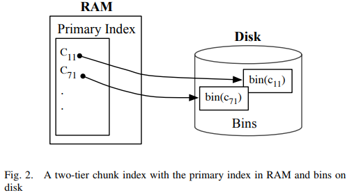
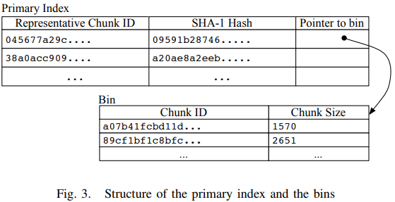

| Venue | Category |
|---|---|
| MASCOTS'09 | Back up deduplication |
Extreme Binning: Scalable, Parallel Deduplication for Chunk-based File Backup1. SummaryMotivation of this paperExtreme BinningImplementation and Evaluation2. Strength (Contributions of the paper)3. Weakness (Limitations of the paper)4. Future Works
The performance of the entire backup operation depends on its backup throughput.
- Traditional backup workloads: consist of large data streams with high locality. (to provide reasonable throughput)
- Non-traditional backup workloads: made up of individual files with no locality among consecutive files in a given window of time.
faciliate fast chunk ID lookup, a single index containing the chunk IDs of all the backed up chunks must be maintained.
This paper wants to solve this issue to service fine-grained low-locality backup workloads.
workload consists of files, instead of large data streams, that arrive in random order from disparate sources. no locality between files that arrive in a given window of time.
primary index: one representative chunk ID entry per file (reside in RAM) second index: the rest of file's chunk IDs (in disk)

the probability that the two sets have the same minimum hash element is the same as their Jaccard similarity coefficient If two files are highly similar they share many chunks and hence their minimum chunk ID is the same with high probability
Extreme binning chooses the minimum chunk ID of a file to be its representative chunk ID.

It also records the hash of file for comparison.
by keeping the whole file hash in the primary index, avoid making a disk access for chunk lookup for most duplicate files.
The Rationale: Extreme Binning groups together files that are highly similar to each other.
duplicate chunks are identified with high accuracy. Only one bin is selected per file
distribute objects to maximize scalability and reliability. A file can be chunked by one backup node and deduplicated by another node.
For example, backup nodes, chunk ID is , When a primary index entry moves, the bin attached to it also moves to the same backup node, all the data chunks attached to the bin also move to the same backup node.
This solution can make each bin independent, but if a chunk ID appears in two bins, there will be two copies of it corresponding data chunk.
make scale out operations clean and simple.
allow for maximum parallelization
Why do this? System scale out does not affect deduplication. (stateless)
HDup: a high number of duplicates on account of all the full backups. LDup: incremental backup dataset, contains few duplicates. Linux distributions
Chunking method and hash function
TTTD and SHA-1
- one tier is small enough to reside in RAM
- the second tier is kept on disk
- using a stateless routing algorithm to for every incoming files to allocate a single backup node.
- Each node manages its own index and data without sharing or knowing the contents of other backup nodes
extra disk space is not required to hold and protect data yet to be backed up. (Data Domain, Hewlett Packard) data is first written to a temporary staging area
it argues that this loss of deduplication is minimal for representative workloads (in practice)
by using a consistent hashing scheme to map every chunk ID to a partition. (Every partition can then by hosted by a dedicated compute node) Autonomy of backup nodes is not possible in such a design
crucially dependent on chunk locality, poor chunk locality may produce unacceptably poor levels of deduplication for them.
in-memory Bloom filter and caches index fragments the lack of chunk locality renders the caching ineffectual